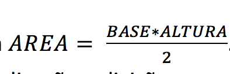
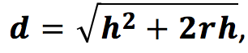
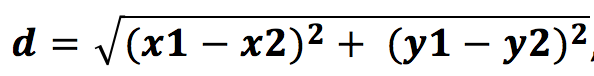

- (fácil) Escreva um programa que leia do teclado um número e o imprima na tela: O valor lido é: "número lido do teclado”.
- (fácil) Escreva um programa para ler um valor numérico (do teclado) e mostre (na tela) o número antecessor.
- (fácil) Escreva um programa que leia duas notas (teclado) de um aluno e apresente a média do aluno.
- (fácil) Escreva um programa para ler do teclado as dimensões de um retângulo (base e altura), calcular e escrever a área do retângulo.
- (fácil) Faça um programa que leia do teclado a idade de uma pessoa expressa em anos, meses e dias e escreva a idade dessa pessoa expressa apenas em dias. Considerar ano com 365 dias e mês com 30 dias. (Não confunda com a data de nascimento)
- (morerado) Escreva um programa para ler o número de votos em branco, nulos e válidos. Calcular e escrever o percentual que cada um representa em relação ao total de eleitores.
- (morerado) Escreva um programa para ler o salário mensal atual de um funcionário e o percentual de reajuste. Calcular e escrever o valor do novo salário.
- (fácil) Faça um programa para calcular a área de uma circunferência, considerando a fórmula ÁREA = π * RAIO2. Utilize as variáveis AREA, RAIO, a constante π (pi = 3,14159) e os operadores aritméticos de multiplicação.
- (fácil) Faça um programa que calcule a área de um triângulo, considerando a fórmula . Utilize as variáveis AREA, BASE e ALTURA e os operadores aritméticos de multiplicação e divisão.
- (fácil) Escreva um programa que leia um valor inteiro, um valor decimal e um caractere. Após a leitura, imprima os três valores lidos, em ordem inversa a da leitura.
- (fácil) Faça um programa que leia uma temperatura em graus Célsius e apresente-a convertida em graus Fahrenheit. A fórmula de conversão é: F = (9 * C + 160) / 5, na qual F é a temperatura em Fahrenheit e C é a temperatura em Celsius;
- (fácil) Faça um programa que leia uma temperatura em Fahrenheit e a apresente convertida em graus Celsius. A fórmula de conversão é: C = (F – 32.0) * (5 / 9.0) , na qual F é a temperatura em Fahrenheit e C é a temperatura em Célsius.
- (moderado) Escreva um programa que leia um número e apresente a raiz quadrada deste número.
- (moderado) Escreva um programa que calcule a potência, para tanto devem ser lidos dois números: a base a e o expoente n. O resultado da potência é an.
- (moderado) Se você estiver a uma altura h (em metros) sobre o nível do mar, sua distância d (em metros) até o horizonte é dada pela formula: , onde r é o raio da Terra (aproximadamente 6378150 metros). Escreva um programa que receba a altura h e determine a distância até o horizonte.
- (difícil) A distância euclidiana ( wikipedia) pode ser utilizada para determinar a distância entre dois pontos 2D em um plano 2D. Cada ponto possui suas próprias coordenadas x e y no plano 2D. Escreva um programa que leia as coordenadas do ponto1 (x1, y1) e as coordenadas ponto2 (x2, y2). Após a leitura dos valores, calcule a distância entre os dois utilizando a distância euclidiana, conforme a equação a seguir: , onde d é a distância entre os dois pontos. Apresente, após o cálculo, a distância entre os dois pontos lidos.